Introduction #
What are Helsinki City bikes? Helsinki City Bikes are shared bicycles available to the public in Helsinki and Espoo metropolitan areas. The main aim of the Helsinki city bike system is to address the so-called last-mile problem present in all distribution networks. The city bikes were introduced in 2016 as a pilot project with only 46 bike stations available in Helsinki. After becoming popular among the citizens, Helsinki city decided to gradually expand the bike network. In the period between 2017 and 2019, approximately one hundred stations were being added to the network each year. By 2019 the bike network reached its complete state with only 7 stations being added in 2020. As of 2020, there were 3,510 bikes and 350 stations operating in Helsinki and Espoo.
Since 2016 more than 10.000.000 rides have been made. The total distance of the trips is 25.291.523 kilometres. To put that in perspective 25.3 million kilometres is 65 times the distance to the moon. The total time all residents spent riding the bikes is approximately 280 Years and 4 months.
In order to use the city bikes, citizens purchase access for a day, week or the entire cycling season that lasts from April to November. All passes include an unlimited number of 30-minute bike rides. For an extra fee of 1€/hour, you can use the bike for longer. Bikes are picked up and returned to stations that are located all around Helsinki and Espoo.
What the average ride looks like? #
The city bike system has grown significantly since 2016, however, how the city bikes are used has not changed substantially. If we look at the individual trips made drug the last 5 years, we will see that the average ride duration is around 13 minutes while the average travelled distance is approximately 2242 meters(1.4 miles). Given the right-skewed distribution of the data, the averages are slightly skewed and the majority of trips actually last from 4–8 minutes and cover a distance of 1700 meters (approx.1 mile).
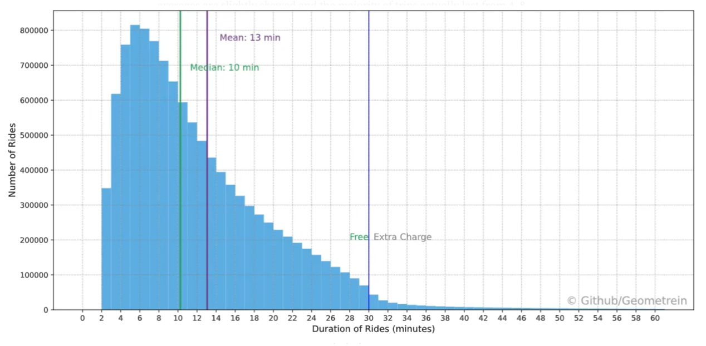
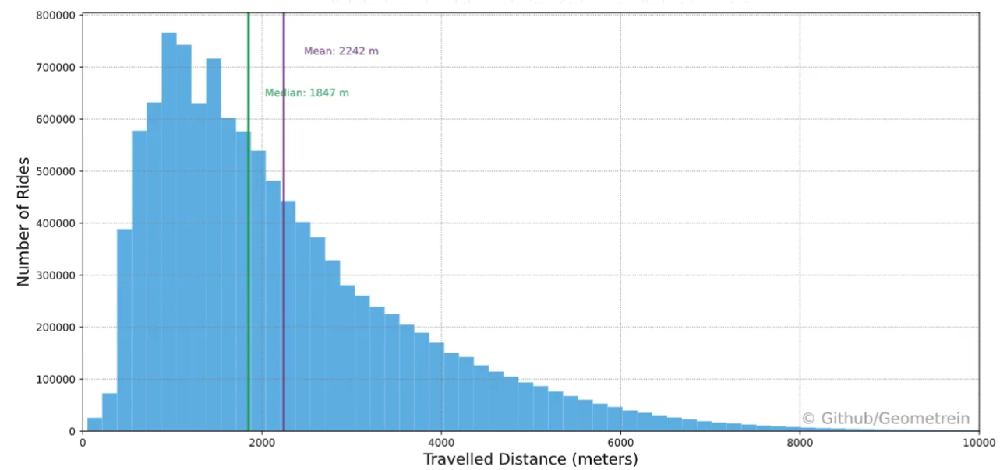
When are the City Bikes used? #
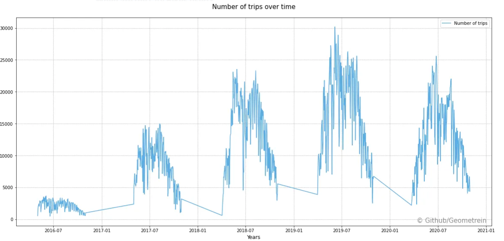
Above you can see the number of daily bike trips since the launch of the City bike system. As we can see expanding the coverage of the network has a huge impact on the number of trips made by the citizens. It is also visible that 2020 was the first year when bike usage declined. There are multiple possible explanations. This decrease can be due to the COVID-19 pandemic or because the city bike network reached the end of its growth phase.
If we look at the heatmap below we can see a well-established daily usage pattern. The Most intensive bike usage occurs from 6:00 to 8:00 and from 16:00 to 18:00 on weekdays. This shows that bikes are actively used by commuters around the beginning and the end of the working day.
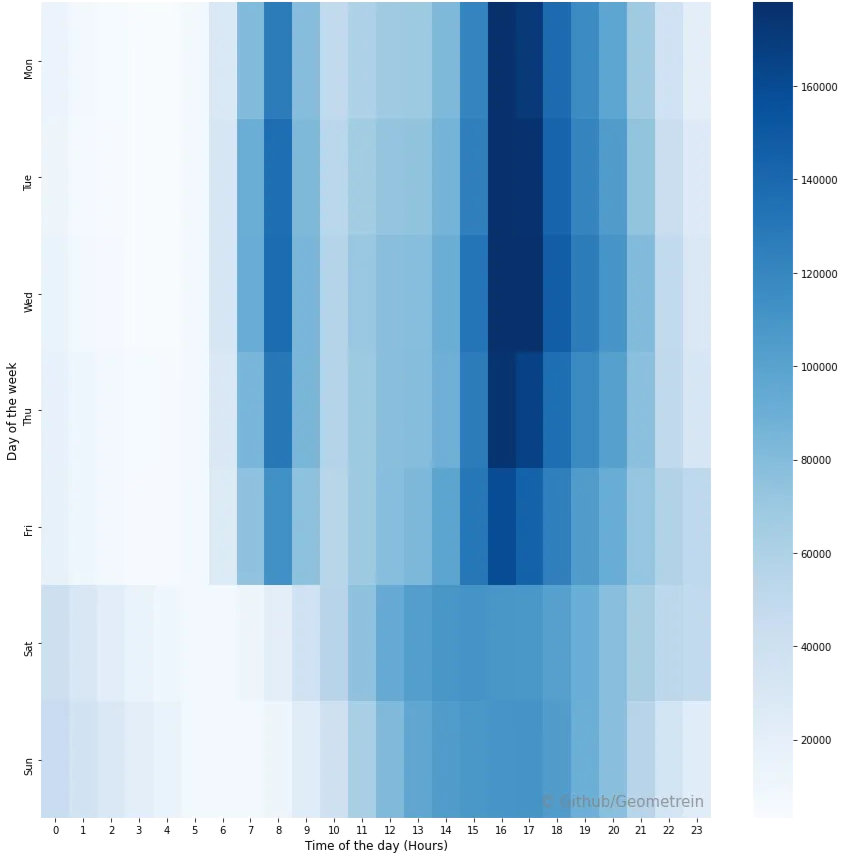
On weekends, however, the usage pattern is different. Seems like Helsinkis’ citizens prefer to kick off the weekend a little late. The most active hours are between 15:00 and 17:00. Interestingly enough, the usage of city bikes is higher around midnight on weekends. This could mean that on weekends city bikes are used as a substitute when the other forms of public transport are no longer available.
Since the City bikes are actively used by commuters, it is natural to assume that the Covid pandemic and the transition to remote work had some effect on city bike usage. The graph below illustrates bike usage patterns for the past three years(2018–2020).
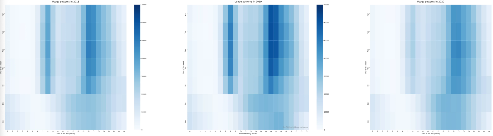
These graphs already illustrate that there is some difference in 2020 bike usage patterns. Besides the decrease in the overall bike usage, the number of trips during the rush hours has also decreased.
Which stations are the most popular? #
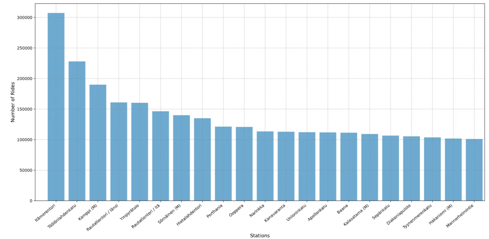 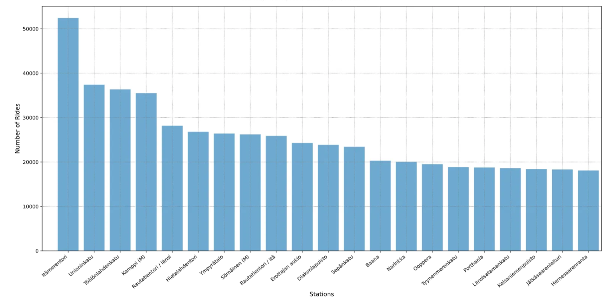
As one can expect not all stations are used equally. In 2016 the station next to the Kamppi metro station(Central Helsinki) was the most popular one. However, since 2017 Itämerentori has become the undisputed champion by usage. Seeing Itämerentori and Töölönlahdenkatu as the most popular stations might be surprising, however, this popularity is explained by their location within the city bike network. While these stations are not in the centre of Helsinki they are grouped around the “centre” of the bike network. In 2016, when there were less than 50 stations, Kamppi was at the structural centre of the network. However, with the expansion of the network towards northern Helsinki the centre of the bike network moved north too. Because of this Itämerentori and Töölönlahdenkatu stations gained more “important” role within the whole network.
One boundary condition that can affect this list is bike availability in a given station. If there are no bikes available, then the dataset will not reflect the demand for bikes but rather their availability. What makes Itämerentori and Töölönlahdenkatu stations lively is that they are popular stations for both departures and returns. This ensures bike availability at all times and increases station usage.
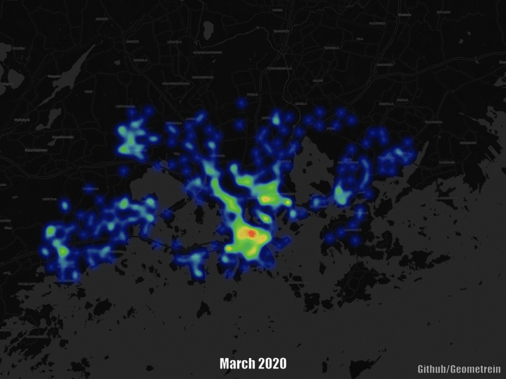
Another interesting observation is that the popularity of bike stations doesn’t change substantially throughout the year. This tendency is illustrated in the animated heatmap above.
Which trips are the most popular? #
The table below shows the top 6 most common origin-destination pairs. The first two rows illustrate the important role of the city bikes on the Aalto University campus. Since the opening of the metro station next to Aalto University, city bikes became a crucial transportation stream for connecting on-campus housing with transportation hubs.
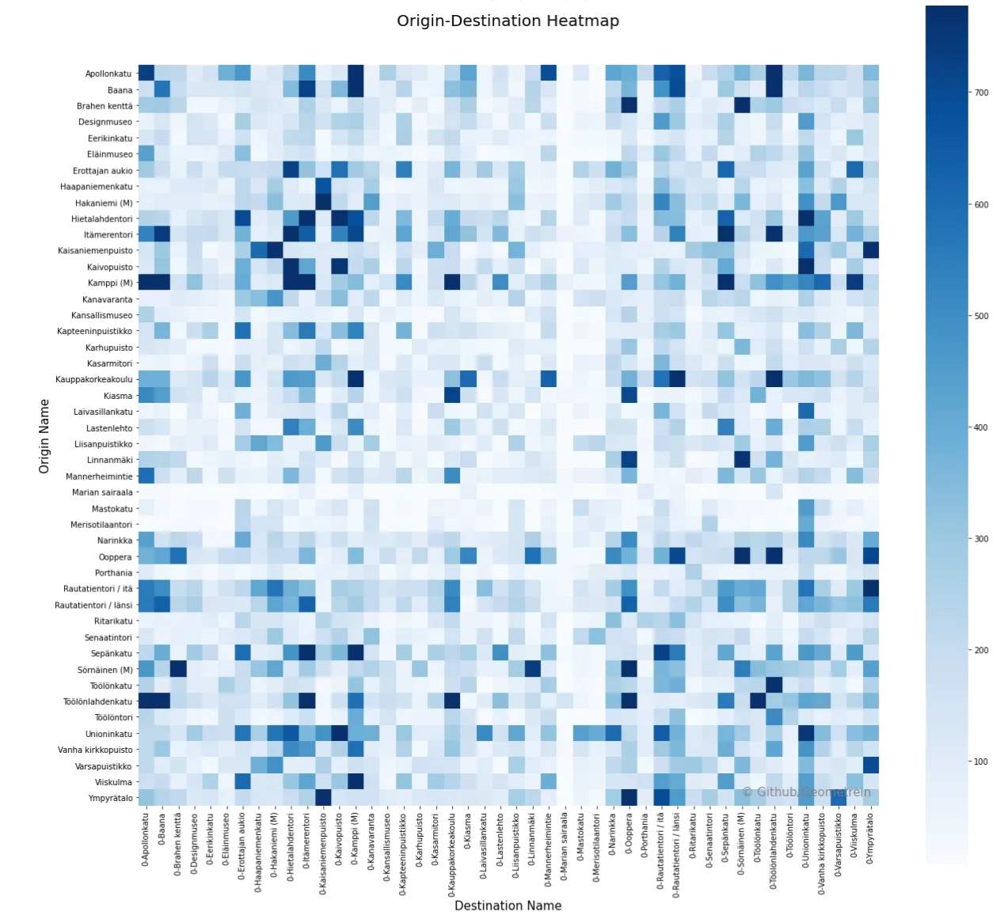
*Any resemblance to the flag of Finland is purely coincidental :)
Does the weather affect city bike usage? #
An intuitive assumption would suggest that there should be a link between air temperature and the use of city bikes. The graph below illustrates that most of the rides occur when the air temperature is between 10 and 21 degrees.
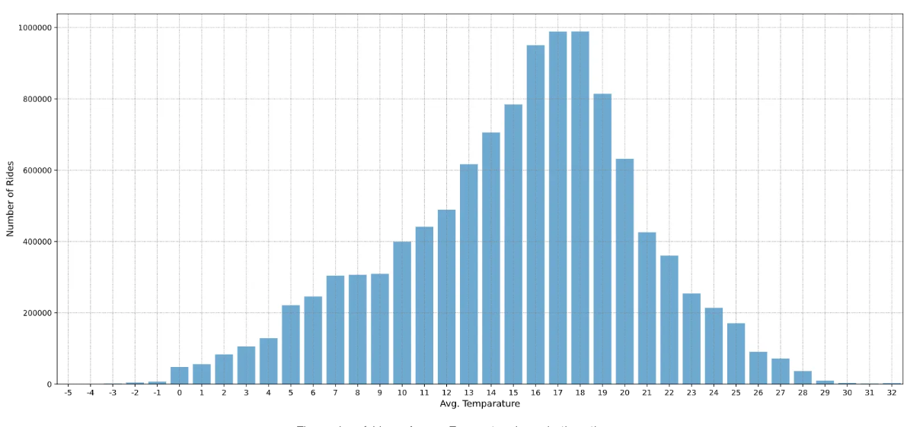
Nevertheless, there is no enough evidence to confidently conclude that bike usage is linked to air temperature. Given the multitude of potential factors that can affect the rides, a concrete causal relationship between these measurements cannot be established. For instance, in Helsinki, the air temperature can be high but it can be accompanied by rain or high wind speed. The tendency shown in the graph could be the result of other external factors. Unfortunately, the underlying dataset does not contain information about other environmental factors.
Additionally, it’s important to note that city bikes are available from April until October and not throughout the whole year. This means that bike usage, in general, is always going to occur roughly within the same temperature range. Colder temperatures will coincide with the start and the end of the cycling season when bike usage is normally low. On the other hand, warmer temperatures will correspond to the summer seasons and the July holidays. Interestingly enough out of all holidays that fall within this time frame, only Juhannus (Midsummer) has a distinct effect on city bike usage(graph below).
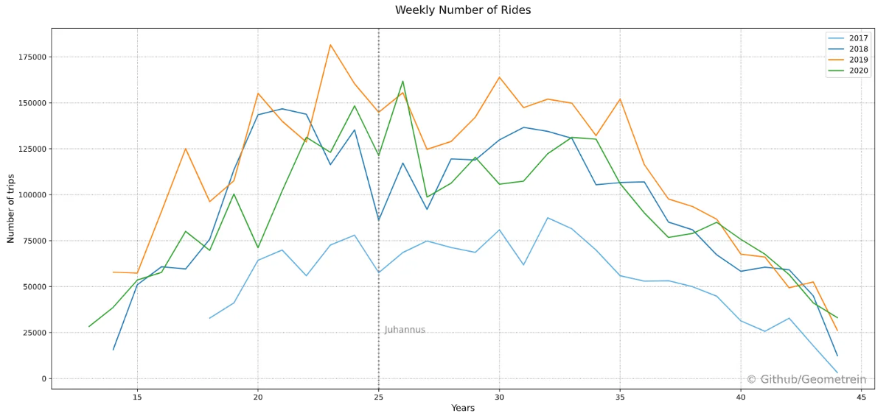
Conclusion #
In this article, we looked at the Helsinki city bike system through the lens of descriptive statistics. This article barely scratched the surface of all the possible analyses that can be performed on the underlying dataset. Those interested in their own exploration can find the dataset on Kaggle. The second part of the article will analyse the Helsinki city bike system as a complex transportation network.